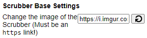
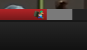
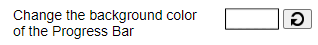
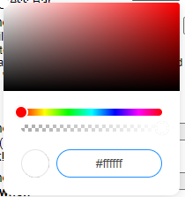
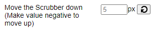

Custom Themes Guide
Index
- 1) Creating a Custom Theme
- 1.1) Enabling Custom Themes
- 1.2) Creating a Custom Scrubber
- 1.3) Copying & Sharing your Custom Theme
- 2) Custom Theme Options
- 3) Adding a Custom Theme
Creating a Custom Theme
Custom themes in PlayerTube are made up of a number of options available in PlayerTube's settings. You can share, edit, or make your own theme to however you like. The custom theme options are basically like lines of CSS code, being able to change their values but with a bit more hand-holding. In this guide, we will be using the Custom Theme Settings section of PlayerTube's settings to start our creation of a custom theme.
Let's start with the basics!
Enabling Custom Themes
To enable custom themes, head over to the PlayerTube extension icon at the top
of your browser. A popup should appear with the PlayerTube settings. We'll be
using this a lot throughout the guide, so remember how to access it!
Inside of the PlayerTube configuration popup, scroll down to
Custom Theme Settings and click on Toggle Custom Theme.
Once the toggle option is set to on (aka is green), relaunch the PlayerTube settings, scroll down to the Custom Theme Settings again, and you should notice many more options for customization!
Note that some options in the custom theme selection might not need any changing, so make sure to read the option's title and description before changing it.
You can find out what each type of option does by looking at the Custom Theme Options part of this guide, but most are easy to understand and we won't go over each one in this section.
Creating a Custom Scrubber
When it comes to setting a custom scrubber, it'll need some patience and hope to get perfect, but it'll be worth our pain & suffering.
For this, we'll be using this GIF of Luigi walkin' with a hammer. You may use the same image for practicing reasons.

If you're using your own image, make sure your image is uploaded to a website with https://, like Imgur or any other image hosting website that is free to access.
First, we'll apply the GIF to the link option on Change the image of the Scrubber under Scrubber Base Settings.

If you'll be using a different image when hovering over the scrubber, you may
set that under the
Change the image of the Scrubber when hovering link option
Make sure that both the static and hover images you'll be using are the same
size dimension-wise.
No need to change this option if you'll be using the same image for each
condition.
Next, let's temporarily set the scrubber size to 12 by using the Change the image size of the Scrubber number option under Scrubber Size and load into a YouTube video to test out.
If you're able to tell that your image is there, or if it even changed to what the scrubber was before, you're getting there!
If your scrubber image is too small, like shown in the screenshot above,
I recommend multiplying or adding to it's current value by two. You can do
the opposite if the image is bigger (obviously).
Make sure to reload the YouTube page everytime you update PlayerTube's
configuration.
When changing the image size, don't worry if the image seems to be cut off.
You can use the Change the height of the Scrubber and
Change the width of the Scrubber number options that is below the
Change the image size of the Scrubber number option to make the
scrubber image appear and make it's actual size bigger.
Use the default size mentioned in the options' description for the height
and width, which should be , and change it so that it's perfect
with the scrubber image you set.
If you'd like to move the scrubber itself, you can find all the position settings under Scrubber Position.
With this, you should have a complete custom scrubber! Hope this helps with your custom theme journey.
Copying & Sharing your Custom Theme
To get a shareable version of your custom theme, use the Copy Custom Theme Settings to Clipboard button at the top of the Custom Theme Settings section of PlayerTube's configuration.
The users that want to use your custom theme will have to follow the steps on Adding a Custom Theme on this page to apply it using the settings you get from the Copy Custom Theme Settings to Clipboard button.
One other thing that should be obvious is that the custom theme can be changed by the users, meaning you should have a open-mind when others change it. Sharing your theme doesn't lock it so only you can edit it, as anyone else could do the same with or without a lock (if there was any but there ain't!!!).
Custom Theme Options
Basic documentation about each option found in the custom theme selection. This also should be obvious, but the turning icon button resets the option next to it.
Color Option
A color option is used to set a custom color for the option it's linked to. Powered by Coloris.
Sometimes the box may appear as a HEX value and may not be usuable. If this happens, reopen PlayerTube's settings popup, as this is an issue with Coloris and the settings popup script which I'm too lazy to fix.
You may click on the box next to the option on the right, and a color menu popup should show.
You can either:
- Use the many different sliders in the menu to change the color's hue, brightness, saturation, and transparency.
- Use the HEX value at the bottom of the color menu popup. (Which should be of use if you're using the same color for multiple settings in your theme)
Link Option
Links are mainly used for a custom scrubber in your theme.
All link options should be start with https:// and not
http://, as YouTube uses https://.
Pretty straight forward -- paste a link to a image into the box next to the option and that should do the trick.
Number Option
Number options hold a number or value, mainly used for changing the size or position of something by pixels (aka pxs)
Simply input a number into the box next to the option's title to set it's value.
Adding a Custom Theme
If you're coming from the last parts of this guide, this part is not needed.
Adding a custom theme is very simple in PlayerTube. All you have to do is get the
code that the custom theme's author has given, and paste it into the
Import, Copy, or Reset Settings text box on PlayerTube's configuration
popup, then click the Apply Settings.
After that, reload your YouTube page, and your custom theme should work without a
issue!